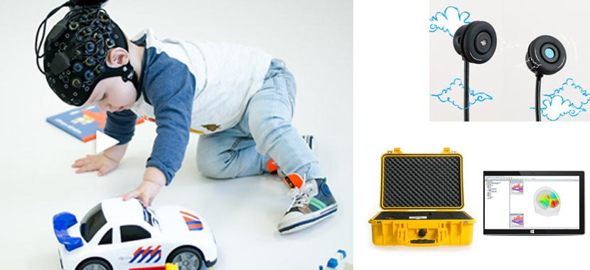

Neuroscience of Education Research Lab
Founded at United Arab Emirates University in 2018. Brain imaging to understand how learning happens — in typical readers, and in children with special educational needs.
Mission
The lab exists to answer a question that classrooms raise every day but rarely get to test: what is actually happening in a child’s brain while they learn? We use wearable brain imaging to watch cortical activity during reading, speaking, and listening — first in typically developing children, to establish what ordinary learning looks like, and then in children with dyslexia, autism, and other special educational needs, to see where and how it differs. The aim is practical: measurements that can inform earlier identification and better-targeted teaching.
I established the lab in 2018 with start-up funding from United Arab Emirates University, and directed it as principal investigator until 2023, within the College of Education. The university described it as the first laboratory of its kind in the UAE. Over those five years it received AED 400,000 (about US $108,000) in internal research funding, trained master’s and doctoral students as paid research assistants on its equipment, and ran continuing-education workshops introducing colleagues to non-invasive neuroimaging.
What fNIRS is, in plain language
Functional near-infrared spectroscopy — fNIRS — shines harmless, low-power near-infrared light through the scalp, the same kind of light a fingertip pulse oximeter uses. Blood absorbs that light differently depending on how much oxygen it is carrying. When a region of the brain’s outer layer, the cortex, becomes active, more oxygenated blood flows to it, and the light returning to the sensors changes. By tracking those changes second by second, fNIRS shows which areas of the cortex are working while a person performs a task — the same underlying signal that functional MRI measures, captured with a soft cap instead of a scanner.
That difference is why it suits research near the classroom. There is no magnet, no tunnel, and no noise: a child sits in an ordinary chair, and an infant can be studied on a parent’s lap. Small movements do not ruin a recording the way they do in MRI, which matters enormously with young children. The whole system is about the size of a desktop computer and travels in a case, so it can be set up in a school or clinic rather than a hospital. Its limits are real but well understood: it sees only the outer few centimeters of the brain, and with coarser detail than MRI. For questions about reading, language, and attention — largely cortical functions — that trade is worth making.
{kind=link}

Project lines
Reading and dyslexia
How does the cortex of a child with dyslexia respond to written words, compared with a typically developing classmate? A doctoral project in the lab recorded fNIRS while second-grade students read, and found measurable differences in activation between the two groups — a step toward earlier, objective identification.
Representative publication: Elshazly & Safi (2023), Journal of the Neurological Sciences, 455. Citation →
Cortical response to facial NMES
My current line, and the point where my two research technologies meet. Neuromuscular electrical stimulation is applied to the muscles of the face in dysphagia and motor speech therapy; fNIRS lets us ask what the brain is doing while it happens. The goal is to understand whether, and how, peripheral stimulation engages the cortex — and to do it in people who can tolerate the session comfortably.
Related work: the 12-session NMES tolerance study now under review, and manuscripts in preparation on electrode tolerance and on tDCS for acquired apraxia. Manuscripts under review →
Early identification of developmental needs
The lab’s broader mission — special educational needs, not only brain imaging — produced a series of screening instruments for the UAE: an early identification scale for children aged 18–36 months, a student-built Early Identification Autism Scale, and, with Ministry of Education funding of AED 1.8 million, a national standardized special education identification test for students aged 3 to 18.
Related work: Ministry of Education and UAEU funded projects, 2018–2023. Funded projects →
The lab on film
A 47-second film about the lab produced by the College of Education at United Arab Emirates University. Narration and on-screen text are in Arabic; it shows the fNIRS headcap being fitted, states the lab’s aim of relating cortical activity to learning outcomes, and introduces the doctoral dyslexia project.
Video courtesy of the College of Education, United Arab Emirates University.
In the lab


More photographs, and the wider gallery, on the Lab/Academic Photos page.